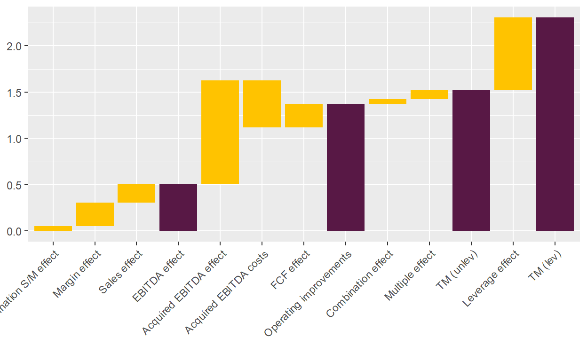
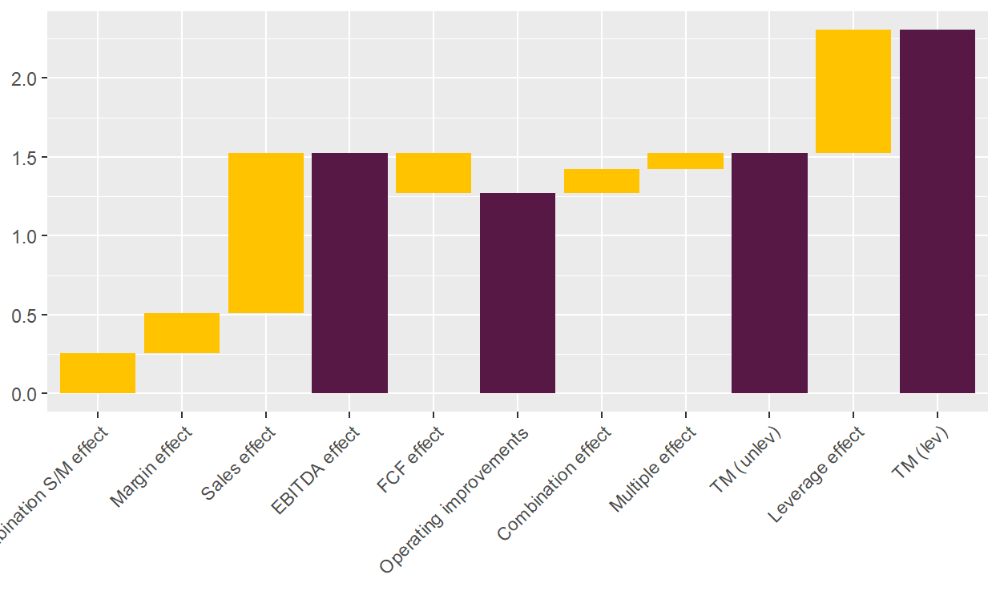

Some additional thoughts about the LBO value bridge.
After studying my previous post about the LBO value bridge, a reader recently reached out to me with an interesting question: how to separate organic and acquired EBITDA growth in the LBO value bridge? As buy-and-build platforms have become more and more prominent in private equity, I gave it some thought, and also tried to figure out more generally how to expand the value creation bridge analysis.1
To start with, remember from the previous post that the goal is to explain the total net proceeds, \(TNP\), over a period \(t\) to \(T\). The total net proceeds are essentially the difference between the equity proceeds to equity holders at exit, \(E_T\), and the invested cost of equity at entry, \(E_t\), as well as any interim dividends and equity injections. Back then, I replaced the equity values with enterprise values minus net debt and continued to calculate the enterprise value with the product of the EBITDA and its multiple. Some steps further, I ended up with a formula that explained the total net proceeds as a combination of the following factors:
As a reminder, the formula looked as follows:
\[ TNP = m_t \Delta C + \Delta m C_t + \Delta m \Delta C - \Delta ND + \sum_{n=t+1}^{T-1} E_n \] However, it’s important to keep in mind that the value bridge can be applied independently of any specific metric. Instead of looking at EBITDA, one can also use other metrics such as Free Cash Flow to the Firm.2 One can also add further factors, such as dilution by management, transaction costs, etc. The only important condition is that all factors on the right end up explaining the total net proceeds on the left.
As an example, let’s separate between organically grown EBITDA and acquired EBITDA. To do so, I change the definition of \(\Delta C\) as the change of the EBITDA of the original platform as well as all add-ons, excluding the acquired EBITDA base of the add-ons. To consider for the acquired EBITDA, I include two new terms:
The equation looks then as follows:
\[ TNP = m_t \Delta C + \Delta m C_t + \Delta m \Delta C - \Delta ND + m_T * C_{T,acq} - X_{acq} + \sum_{n=t+1}^{T-1} E_n \]
Of course, I could have also subsumed the acquisition costs in either the net debt change or further capital injections and saved one bar in the chart. Then, however, the value bridge wouldn’t clearly show how much value was actually created by acquiring additional EBITDA. Another decision I made is that any growth of the acquired EBITDA is considered in the original EBITDA term. These decisions are all arbitrary and one could make different assumptions. It really depends on what the user wants to get out of the value bridge and what data he has to start with. I discuss this point further below.
Below, I update the code and run the original example I took from Puche but assume further that the company acquired an additional EBITDA of 10 for total costs of 50 - hence, with an implicit entry multiple of 5x. As the platform is ultimately sold for 11x, there is an additional gain of 60 for equity owners.
#' Calculate the value creation bridge for a PE investment, splitting it up in leverage, multiple and EBITDA effect.
#' The EBITDA effect is further split in an organic and inorganic part.
#'
#' The function creates the value creation for LBOs; detailed explanation about methodology can be found in Puche (2016) and Pindur (2007).
#' The split-up of the total proceeds (which are net of invested cost, i.e. the net capital gain) in multiple effect, EBITDA effect,
#' combination effect and FCF effect is straightforward and best explained
#' in Pindur (2007). Pindur then scales everything simply by dividing by the total proceeds so that everything adds to 1.
#'
#' In addition, Puche (2016, see footnote 23) focuses on the multiple, which is partly a result of leverage; hence, he
#' unlevers first the multiple and the difference between the levered and unlevered mutiple is the multiple effect.
#'
#'@param .startEquity numeric; equity valuation at start date of the observation period (typically at entry), i.e. EV minus the debt at start point.
#' Careful: if fund does not acquire 100 per cent of equity, you have to scale the fund's investment up.
#'@param .endEquity numeric; equity valuation at end date of observation period.
#'@param .startDebt numeric; debt at start date.
#'@param .endDebt numeric; debt at end date.
#'@param .startRev numeric; revenue at start date.
#'@param .endRev numeric; revenue at end date.
#'@param .startEBITDA numeric; EBITDA at start date.
#'@param .endEBITDA numeric; EBITDA at end date. As you model the acquired EBITDA separately, this is now only the organic EBITDA.
#'@param .acqEBITDA numeric; EBITDA acquired during ownership.
#'@param .acqCosts numeric; total costs for acquiring EBITDA during ownership. Note: these could also be modeled in \code{.interimCC} or
#' change in net debt, but goal is to make it visible.
#'@param .interimCC numeric; interim additional equity investments. Careful with scaling, should be 100 per cent of equity.
#'@param .interimDist numeric; interim distributions to equity from investments. Careful with scaling, should be 100 per cent of equity.
#'@param .interimIntRate numeric; the interest rate during the holding period for that specific deal.
#'@param .holdingPeriod numeric; holding period (in years) from start to end date of the observation.
#'@return List including the following: 1) A vector with the levered and unlevered multiple (TM_lev and TM_unlev),
#' the overall gain / (loss) on the deal, and
#' the leverage effect, which is the difference between TM_lev and TM_unlev; it then includes the different effects (FCF, EBITDA, etc.)
#' that explain the gain. Important: those effects are shown in absolute numbers. 2) A data.table with the relevant input parameters.
#' 3) A data.table with the relevant results.
#'@export
#'
#'@references
#' Puche (2016): Essays on Value Creation and its Determinants in Private Equity, Dissertation, p. 29ff
#' Pindur (2007): Value Creation in Successful LBOs, Dissertation, p. 69ff
#'
#'@examples
#' ##### Use numerical example from Puche (2016, Table 2-1); adjusted for acquired EBITDA
#' list_results_update <- value_creation_LBO(.startEquity = 50,
#' .endEquity = 135,
#' .startDebt = 50,
#' .endDebt = 30,
#' .startRev = 100,
#' .endRev = 120,
#' .startEBITDA = 10,
#' .endEBITDA = 15,
#' .acqEBITDA = 5,
#' .acqCosts, = 25,
#' .interimCC = 15,
#' .interimDist = 20,
#' .interimIntRate = 0.09,
#' .holdingPeriod = 4)
value_creation_LBO_update <- function(.startEquity, .endEquity, .startDebt, .endDebt, .startRev, .endRev, .startEBITDA, .endEBITDA,
.acqEBITDA=0, .acqCosts=0,
.interimCC, .interimDist, .interimIntRate, .holdingPeriod) {
### Calculations of additional inputs
startEV <- .startEquity + .startDebt
endEV <- .endEquity + .endDebt + .acqCosts
startEV_EBITDA_mult <- startEV/.startEBITDA
endEV_EBITDA_mult <- endEV/(.endEBITDA + .acqEBITDA)
costDebt <- (1+.interimIntRate)^.holdingPeriod - 1
invCapital <- .startEquity + .interimCC
deltaEquity <- .endEquity - .startEquity
gain <- deltaEquity + .interimDist - .interimCC
avgDebtEquity <- (.startDebt/.startEquity + (.endDebt + .acqCosts)/.endEquity)/2 #TODO: Understand why you need the average here
startMargin <- .startEBITDA/.startRev
endMargin <- .endEBITDA/.endRev
### Calculations of output
TM_lev <- gain/invCapital
TM_unlev <- (TM_lev + costDebt * avgDebtEquity)/(1 + avgDebtEquity)
lev_effect <- TM_lev - TM_unlev
mult_effect <- .startEBITDA * (endEV_EBITDA_mult - startEV_EBITDA_mult)
mult_EBITDA_comb_effect <- (.endEBITDA - .startEBITDA) * (endEV_EBITDA_mult - startEV_EBITDA_mult)
FCF_effect <- -(.endDebt - .startDebt) + .interimDist - .interimCC
EBITDA_effect <- (.endEBITDA - .startEBITDA) * startEV_EBITDA_mult
Acq_EBITDA_effect <- .acqEBITDA * endEV_EBITDA_mult
Rev_effect <- (.endRev - .startRev) * startMargin * startEV_EBITDA_mult
margin_effect <- (endMargin - startMargin) * .startRev * startEV_EBITDA_mult
SM_comb_effect <- (.endRev - .startRev) * (endMargin - startMargin) * startEV_EBITDA_mult
vec_results <-c(TM_lev = TM_lev,
TM_unlev = TM_unlev,
gain = gain,
lev_effect = lev_effect,
mult_effect = mult_effect,
mult_EBITDA_comb_effect = mult_EBITDA_comb_effect,
EBITDA_effect = EBITDA_effect,
FCF_effect = FCF_effect,
Rev_effect = Rev_effect,
margin_effect = margin_effect,
SM_comb_effect = SM_comb_effect,
startEV_EBITDA_mult = startEV_EBITDA_mult,
endEV_EBITDA_mult = endEV_EBITDA_mult,
startEV = startEV,
endEV = endEV,
totalInv = .startEquity + .interimCC,
TM_mult = mult_effect/abs(gain) * abs(TM_unlev),
TM_mult_EBITDA_comb = mult_EBITDA_comb_effect/abs(gain) * abs(TM_unlev),
TM_EBITDA = EBITDA_effect/abs(gain) * abs(TM_unlev),
TM_FCF = FCF_effect/abs(gain) * abs(TM_unlev),
TM_Rev = Rev_effect/abs(gain) * abs(TM_unlev),
TM_margin = margin_effect/abs(gain) * abs(TM_unlev),
TM_SM_comb = SM_comb_effect/abs(gain) * abs(TM_unlev),
Acq_EBITDA_effect = Acq_EBITDA_effect,
Acq_Costs_effect = -.acqCosts,
TM_Acq_EBITDA = Acq_EBITDA_effect/abs(gain) * abs(TM_unlev),
TM_Acq_Costs = -.acqCosts/abs(gain) * abs(TM_unlev))
print_table_inputs <- data.table(
Item = c("Revenue", "EBITDA", "Equity", "Net Debt", "EV", "EV/EBITDA", "CC", "Dist",
"Holding period", "Interest rate p.a.", "Avg debt/equity ratio", "Cost of debt"),
Entry = c(.startRev, .startEBITDA, .startEquity, .startDebt, startEV, startEV_EBITDA_mult,
rep(NA, 6)),
Interim = c(NA, .acqEBITDA, NA, .acqCosts, NA, NA, .interimCC, .interimDist,
.holdingPeriod, .interimIntRate, avgDebtEquity, costDebt),
Exit = c(.endRev, .endEBITDA, .endEquity, .endDebt, endEV, endEV_EBITDA_mult, rep(NA, 6))
)
print_table_outputs <- data.table(
Item = c("TM (levered)",
"Gain / TM (unlevered)",
"FCF",
"Comb. multiple / EBITDA",
"Multiple",
"Acquired EBITDA",
"Costs acquired EBITDA",
"EBITDA",
"Comb. revenue/margin",
"Revenue",
"Margin"),
Absolute = c(NA, vec_results[c(3,8,6,5,24,25,7,11,9,10)]),
TM = c(vec_results[c(1,2,20,18,17,26,27,19,23,21,22)])
)
### Output
return(list(vec_results = vec_results,
print_table_inputs = print_table_inputs,
print_table_outputs = print_table_outputs))
}#' Wrapper function for ggplot to plot value bridge for function \code{\link{value_creation_LBO_update}},
#' adjusted for accquired EBITDA.
#'
#' @param .list_value_creation_LBO list; output from function \code{\link{value_creation_LBO_update}}.
#' @return ggplot2 bar plot that shows the value creation bridge.
#'
#' @import ggplot2
#' @export
#'
#' @references
#' \url{https://learnr.wordpress.com/2010/05/10/ggplot2-waterfall-charts/}
plot_value_bridge_update <- function(.vec_value_creation_LBO, .fillColors = c("#FFC300", "#581845")) {
#Calculate inbetween multiples
mult_OpImpr <- .vec_value_creation_LBO["TM_unlev"] - .vec_value_creation_LBO["TM_mult"] - .vec_value_creation_LBO["TM_mult_EBITDA_comb"]
strDesc <- c("Combination S/M effect", "Margin effect", "Sales effect", "EBITDA effect","Acquired EBITDA effect",
"Acquired EBITDA costs", "FCF effect", "Operating improvements",
"Combination effect", "Multiple effect", "TM (unlev)", "Leverage effect", "TM (lev)")
plotDF <- data.frame(Desc = factor(strDesc, levels = strDesc),
Type = c("Bridge", "Bridge", "Bridge", "Full", "Bridge", "Bridge", "Bridge", "Full",
"Bridge", "Bridge", "Full", "Bridge", "Full"),
Start = c(0,
.vec_value_creation_LBO["TM_SM_comb"],
.vec_value_creation_LBO["TM_SM_comb"] + .vec_value_creation_LBO["TM_margin"],
0,
.vec_value_creation_LBO["TM_EBITDA"],
.vec_value_creation_LBO["TM_EBITDA"] + .vec_value_creation_LBO["TM_Acq_EBITDA"],
.vec_value_creation_LBO["TM_EBITDA"] + .vec_value_creation_LBO["TM_Acq_EBITDA"] +
.vec_value_creation_LBO["TM_Acq_Costs"],
0,
mult_OpImpr,
mult_OpImpr + .vec_value_creation_LBO["TM_mult_EBITDA_comb"],
0,
.vec_value_creation_LBO[["TM_unlev"]],
0),
End = c(.vec_value_creation_LBO["TM_SM_comb"],
.vec_value_creation_LBO["TM_SM_comb"] + .vec_value_creation_LBO["TM_margin"],
.vec_value_creation_LBO["TM_EBITDA"],
.vec_value_creation_LBO["TM_EBITDA"],
.vec_value_creation_LBO["TM_EBITDA"] + .vec_value_creation_LBO["TM_Acq_EBITDA"],
.vec_value_creation_LBO["TM_EBITDA"] + .vec_value_creation_LBO["TM_Acq_EBITDA"] +
.vec_value_creation_LBO["TM_Acq_Costs"],
mult_OpImpr,
mult_OpImpr,
mult_OpImpr + .vec_value_creation_LBO["TM_mult_EBITDA_comb"],
.vec_value_creation_LBO[["TM_unlev"]],
.vec_value_creation_LBO[["TM_unlev"]],
.vec_value_creation_LBO[["TM_lev"]],
.vec_value_creation_LBO[["TM_lev"]]))
plotDF$Amount <- plotDF$End - plotDF$Start
plotDF$ID <- 1:nrow(plotDF)
#https://stackoverflow.com/questions/50688764/r-ggplot2-ignoring-unknown-aesthetics-with-geom-rect
suppressWarnings(ggplot(plotDF, aes(x=Desc, fill = Type)) +
scale_fill_manual(values = .fillColors) +
geom_rect(aes(x=Desc, xmin = ID - 0.45, xmax = ID + 0.45, ymin = Start, ymax = End)) +
xlab("") +
theme(legend.position = "none", axis.text.x = element_text(angle = 45, hjust = 1)))
}Let’s first plot the inputs again. The acquired EBITDA is shown in the interim column and so are the acquisition costs (under net debt).
##### Use numerical example from Puche (2016, Table 2-1), updated for acquired EBITDA
acqEBITDA <- 10
acqCosts <- 50
list_results <- value_creation_LBO_update(.startEquity = 50,
.endEquity = 135 + acqEBITDA*11 - acqCosts, #Add additional value created by add-ons to exit equity
.startDebt = 50,
.endDebt = 30,
.startRev = 100,
.endRev = 120,
.startEBITDA = 10,
.endEBITDA = 15,
.acqEBITDA = acqEBITDA,
.acqCosts = acqCosts,
.interimCC = 15,
.interimDist = 20,
.interimIntRate = 0.09,
.holdingPeriod = 4)
kbl(list_results$print_table_inputs,
caption="Inputs of value creation analysis of Puche's example; adjusted for acquired EBITDA with multiple expansion") %>%
kable_classic(full_width = FALSE)| Item | Entry | Interim | Exit |
|---|---|---|---|
| Revenue | 100 | NA | 120 |
| EBITDA | 10 | 10.0000000 | 15 |
| Equity | 50 | NA | 195 |
| Net Debt | 50 | 50.0000000 | 30 |
| EV | 100 | NA | 275 |
| EV/EBITDA | 10 | NA | 11 |
| CC | NA | 15.0000000 | NA |
| Dist | NA | 20.0000000 | NA |
| Holding period | NA | 4.0000000 | NA |
| Interest rate p.a. | NA | 0.0900000 | NA |
| Avg debt/equity ratio | NA | 0.7051282 | NA |
| Cost of debt | NA | 0.4115816 | NA |
Running the value bridge analysis with the updated numbers produces the following results:
kbl(list_results$print_table_outputs,
caption="Results of value creation analysis of Puche's example; adjusted for acquired EBITDA with multiple expansion") %>%
kable_classic(full_width = FALSE)| Item | Absolute | TM |
|---|---|---|
| TM (levered) | NA | 2.3076923 |
| Gain / TM (unlevered) | 150 | 1.5235864 |
| FCF | 25 | 0.2539311 |
| Comb. multiple / EBITDA | 5 | 0.0507862 |
| Multiple | 10 | 0.1015724 |
| Acquired EBITDA | 110 | 1.1172967 |
| Costs acquired EBITDA | -50 | -0.5078621 |
| EBITDA | 50 | 0.5078621 |
| Comb. revenue/margin | 5 | 0.0507862 |
| Revenue | 20 | 0.2031449 |
| Margin | 25 | 0.2539311 |
plot_value_bridge_update(list_results$vec_results)
The value bridge plot shows that the acquired EBITDA has a large positive impact on the operational performance of the company. This impact is partially offset by the costs of acquisition though. The example shows how PE firms would like the add-on strategy to work: buy add-ons cheap, sell them for a much larger multiple as part of a platform. Of course, reality is often more complicated and, in my opinion, often not enough thought is given as to why someone would pay a much higher multiple just because the add-ons are now under one umbrella. This becomes apparent when you talk with PE firms of different size: the platform for a small PE player is the add-on for a large one. Should it be valued high or low?
The example above showed how to incorporate one additional value creation lever, inorganic EBITDA growth. As pointed out though, one could use plenty more and the studies linked above do so: revenue growth is split up between market growth, market share growth and alpha, margins are separated between industry changes, acquired margins, and alpha, etc. Ultimately, they end up with close to 20 bars in their chart. So which levers should you use? In my opinion, the key criteria should be data availability and comparability.
At the one end of the spectrum, if you have detailed data available about a specific investment and you are interested about the levers of value creation for this specific investment, you might add as many as you deem reasonable / interesting. For example, if the investment did only three add-ons, but all three of them were important return drivers and had different characteristics, you might want to add them individually. You could also add levers that reduce the returns, such as transaction costs, or dilution by management.
At the other end of the spectrum, if you want to compare different investment cases with limited insights, you want to focus on levers that make sense for almost all of the investment cases. Almost all buyout investments report their total EBITDA; however, you often will not know how much of the EBITDA growth was due to organic growth initiatives or add-ons. You are often also in the dark about the transaction costs and other issues.
To see that this analysis is still helpful, let’s re-run the above example, but let’s map the EBITDA growth and costs from the add-ons into total EBITDA and net debt. Essentially, let’s run the analysis from the original post.
list_results <- value_creation_LBO(.startEquity = 50,
.endEquity = 135 + acqEBITDA*11 - acqCosts, #Add additional value created by add-ons to exit equity
.startDebt = 50,
.endDebt = 30 + acqCosts,
.startRev = 100,
.endRev = 120 + acqEBITDA/(15/120), #I assume the acquired EBITDA has the same margin as the platform
.startEBITDA = 10,
.endEBITDA = 15 + acqEBITDA,
.interimCC = 15,
.interimDist = 20,
.interimIntRate = 0.09,
.holdingPeriod = 4)
plot_value_bridge(list_results$vec_results)
Not surprisingly, some information is lost in comparison to the previous chart. There is a large EBITDA effect and one can not figure out where it is coming from: did the company grow organically that strongly? Did it acquire add-ons? And if it acquired add-ons, did it do so cheaply or did it acquire them close to the original platform’s multiple, but then lifted meaningful synergies. However, the fact that the FCF effect is negative, despite very strong operational performance, is an indication that a fair share of the value creation must be through add-ons. If not, where did all the money go? Ultimately, both value bridges tell almost the same story.
There are many studies that apply the value bridge with an ever increasing number of factors, for example Kroll’s Created Value Attribution (2014) and Insead’s Value Creation 2.0 (2016), but while they show plenty of charts, they are remarkably reserved to show numeric examples or the formulas to derive the results.↩︎
Damodaran has a very insightful recent post that shows nicely though why this might not be such a good idea.↩︎